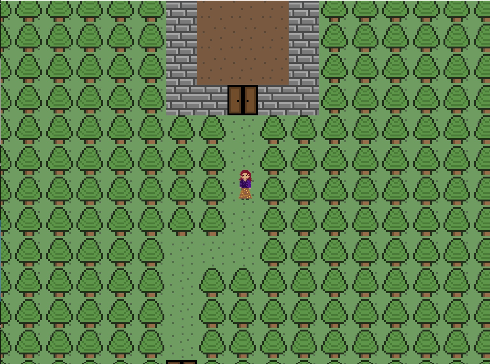
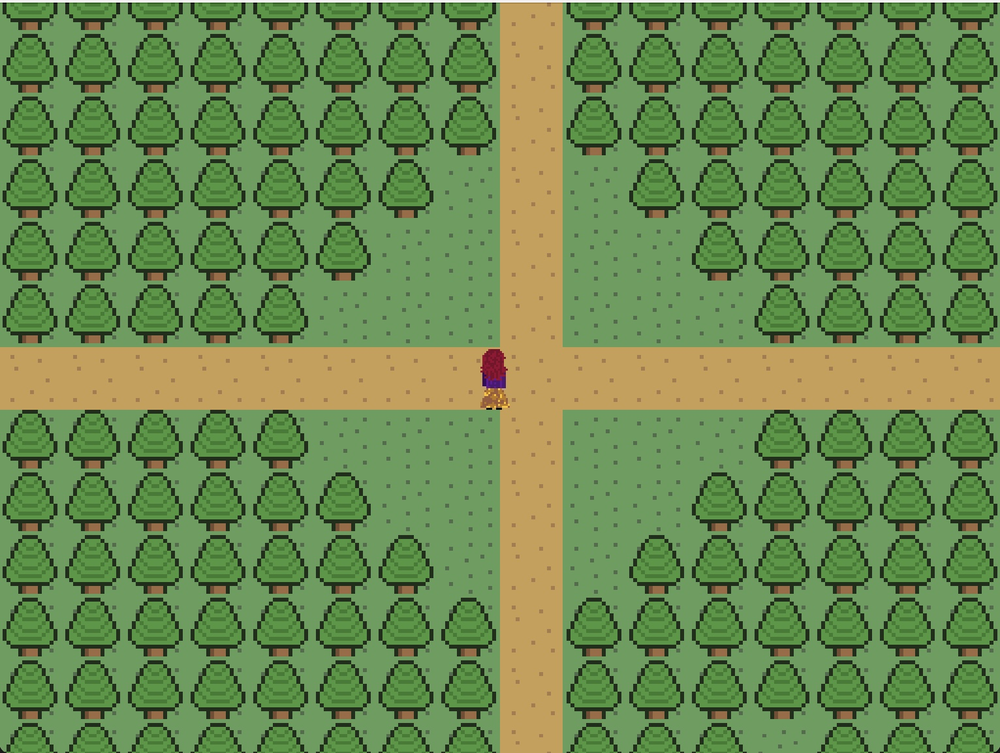

03.
Screenshots .



✦ SOFTWARE PROJECT
A Java-based 2D adventure RPG built while applying object-oriented programming, data structures, multi-class program organization, and structured gameplay logic.
01.
This project is a 2D adventure game developed in Java. I used object-oriented programming and separate Java classes to organize the application and implement structured gameplay behavior.
Building the project gave me experience working with a larger Java codebase rather than isolated programming exercises and helped reinforce how multiple classes interact within one application.
02.
A short screen recording showing the game running.
03.


04.
Java
Object-oriented programming, classes, methods, data structures, and multi-file application design.
Built and tested as a multi-class Java application.
05.
This project helped me become more comfortable organizing a larger Java program and understanding how multiple classes work together within one system.
I also gained additional experience debugging, navigating project structure, and applying object-oriented programming to a visual application.